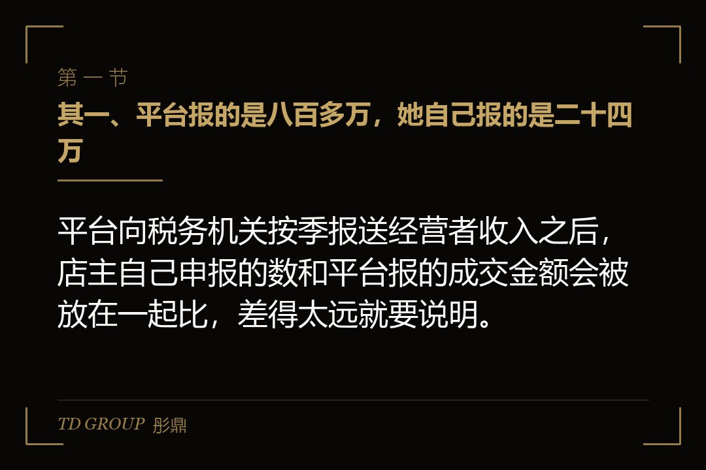
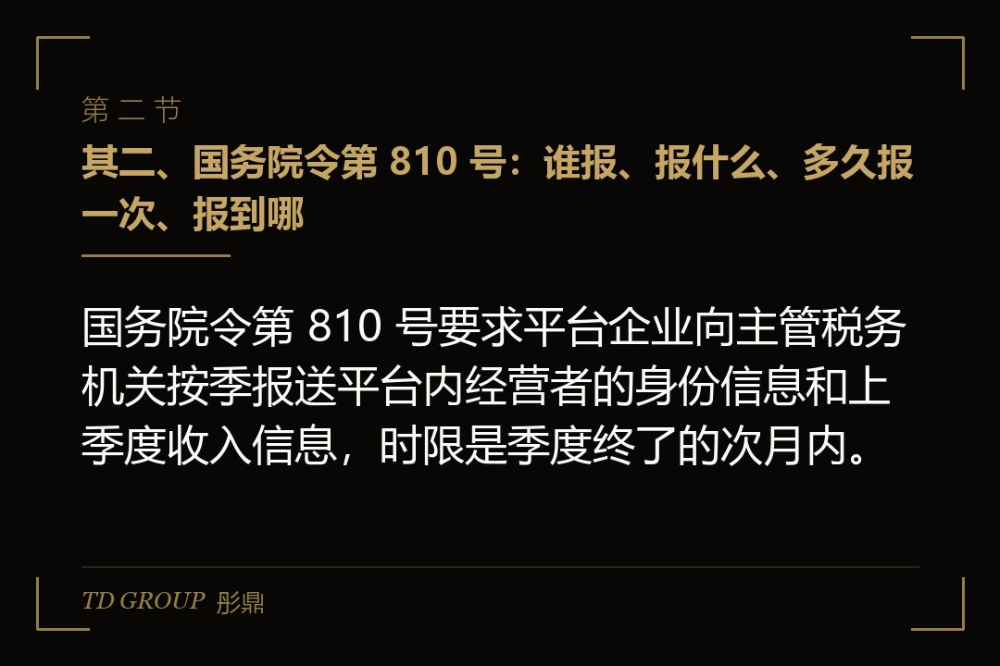
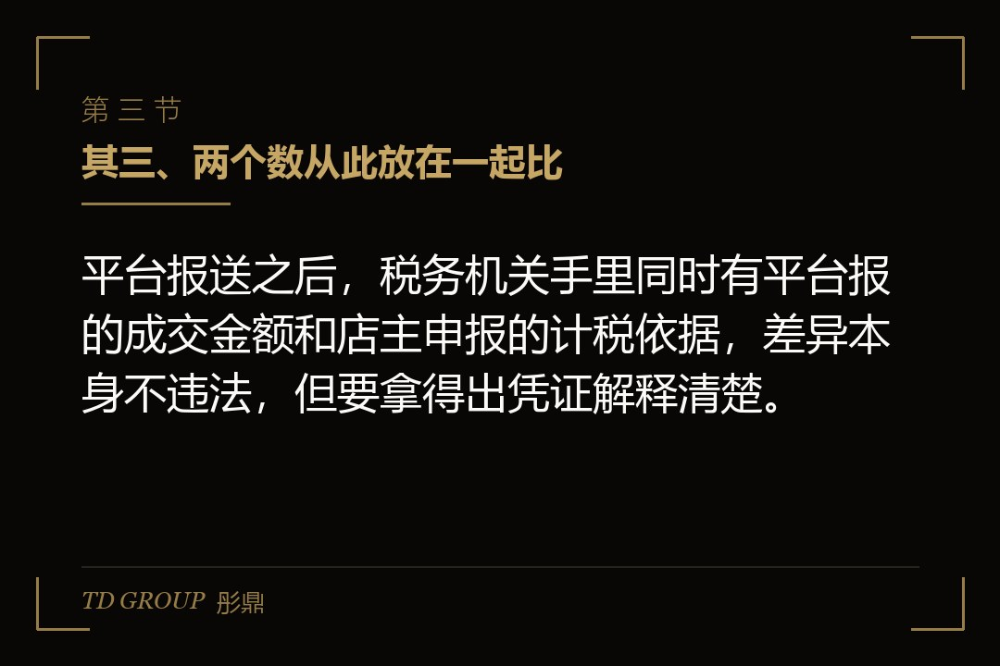

其一、平台报的是八百多万，她自己报的是二十四万

结论先行：平台向税务机关按季报送经营者收入之后，店主自己申报的数和平台报的成交金额会被放在一起比，差得太远就要说明。
假设有家做女装的网店，开了六年，主体是一家个体工商户，主管税务机关给它核的是定期定额，每月八万元销售额。店主按这个数按季交税，账从来没建过。2025 年秋天，她照旧交了三季度的税，对应的销售额是二十四万元。
同一个十月，她入驻的那家平台按照国家税务总局的公告，头一次把平台内经营者上一季度的收入信息报给了税务机关。平台后台记着的，是这家店 2025 年三季度八百多万元的成交金额。
到了 2026 年春天，主管税务机关给她发了一条风险提示，意思很直接：平台报送的收入和你申报的计税依据差距很大，请自行核对、说明情况。她这才知道，平台那份数据，税务机关早就拿在手上了。
她不是没交税，也没有伪造什么，她只是一直把定额当成自己该交的全部。这篇文章讲的就是这件事：平台按季报送到底报了什么、谁报、报到哪，两个数放在一起比意味着什么，私户收款为什么从此说不清，报送和稽查有什么区别，以及店主现在该做的三件事。
先划一条边。核定征收本身是什么、怎么申请、税务机关按什么标准核，是这个专题下一篇的内容，不在本文展开。本文只讲报送这件事改变了什么，读者是开网店、做直播带货、做跨境电商的老板，不是会计，所以能用大白话的地方一律用大白话。
其二、国务院令第 810 号：谁报、报什么、多久报一次、报到哪

结论先行：国务院令第 810 号要求平台企业向主管税务机关按季报送平台内经营者的身份信息和上季度收入信息，时限是季度终了的次月内。
《互联网平台企业涉税信息报送规定》以国务院令第 810 号公布，2025 年 6 月 23 日公布并自公布之日起施行。用大白话说，它给平台加了一项义务：每个季度结束后的那个月里，把上个季度平台内经营者和从业人员的身份信息、收入信息，交给平台的主管税务机关。
报的人是平台，不是店主。店主不用为这次报送做任何操作，也拦不住。报的内容有两块：一块是身份，你是谁、用哪个主体在平台上经营；另一块是收入，上个季度你在平台上做了多少。报到哪，是平台的主管税务机关，再由税务系统内部流转到店主的主管税务机关。
国家税务总局公告 2025 年第 15 号把时间表定死了。存量平台在 2025 年 7 月 1 日至 30 日先报平台自己的基本信息，2025 年 10 月 1 日至 31 日头一次报送经营者和从业人员的身份信息和收入信息，也就是 2025 年三季度的收入。覆盖的不只是卖货的平台，直播、货运、灵活用工平台都在里面。
平台要是不报、瞒报，处二万元以上十万元以下罚款，情节严重的十万元以上五十万元以下。这条罚则是写给平台的，意思是平台没有理由替店主少报。开头那家女装店的八百多万，就是这么到税务机关手里的。
换个比方。以前税务机关看店主，像老师只看学生自己交的作业；现在多了一份平台交上来的考勤和成绩单。作业和成绩单对得上，什么事都没有；对不上，老师会先来问一句为什么。问的时候答得上来，是一回事；答不上来，是另一回事。
其三、两个数从此放在一起比

结论先行：平台报送之后，税务机关手里同时有平台报的成交金额和店主申报的计税依据，差异本身不违法，但要拿得出凭证解释清楚。
先把一个误会拆掉：平台报的数和店主该交税的数，本来就不一定相等。平台报的是它后台看到的成交口径，退货退款、刷单空转、平台扣掉的服务费和推广费、代收后转给店主的货款，这些在平台那一栏和在店主的账上，未必是同一个数。
所以差异不等于偷税。税务机关也知道这一点，它要的不是两个数严丝合缝，而是差在哪、为什么差、有没有凭证。退货有平台的退款记录，刷单有资金原路退回的流水，平台扣费有平台出的结算单。能拿出来的差异，就是可以解释的差异。
再假设一家做宠物用品的网店，主体是一家小规模纳税人公司，平台报它三季度成交五百多万元，它自己申报的销售额是四百多万元。收到提示后，会计把平台后台的退款明细、结算单和银行流水一张张对上，差的那一截几乎全是退货和平台扣费。说明交上去，事情就过去了。
麻烦的是另一种差异：差的那部分说不出去向。假设有家店平台报了三百万，申报了六十万，剩下的二百四十万既不是退货也不是平台扣费，而是走了店主个人账户。这时候两个数放在一起，缺口指向的就不是口径，而是收入。
有店主会问，我能不能不管平台报了多少，只管自己那本账。答案是不能。平台那一栏不是店主填的，也改不了，它会一直在税务机关那里放着；店主能做的只有让自己这一栏和它对得上，对不上的地方有凭证。账做得越粗，两栏之间那道差就越说不清。
关键在于，从 2025 年三季度起，每个季度都会多出一份平台报的数，而且是持续的、逐季累积的。店主过去只管自己那一栏，现在要同时管两栏，还得能说清两栏之间那道差。一个季度对不上可以说是口径，四个季度都对不上，解释的空间就小了。
其四、私户收款为什么再也藏不住
结论先行：私户收款改变的只是钱进哪个账户，平台记录的成交金额不会跟着变，报送之后缺口会直接指向没有申报的那部分收入。
很多店主过去的习惯是，平台结算的钱进对公账户或者个体户账户，一部分客户走私下转账，进个人账户。他们的逻辑是，税务机关看得到的是公户，看不到的是私户。平台报送之后这个逻辑不成立了，因为平台报的是成交，不是收款账户。
国家税务总局 2026 年 7 月 10 日曝光的七起网红网店偷税案件，全都有私户收款这一条。其中杭州一名网络主播，通过私户收款、转换收入性质少缴税款三百一十三点四五万元，追缴税款加滞纳金加罚款合计六百三十一点九六万元，2025 年 12 月处理。
聊城一家做网店的商贸经营部，私户收款、没有办理纳税申报，少缴五百四十四点七二万元，合计追缴九百七十一点二九万元，2025 年 7 月处理。七起案件合起来看，追缴加滞纳金加罚款的总额，约为少缴税款的两倍上下。
两倍是怎么来的。《税收征管法》规定，未按期缴纳的税款从滞纳之日起按日加收万分之五的滞纳金；偷税的，追缴税款、滞纳金，并处不缴或者少缴税款百分之五十以上五倍以下的罚款。拖的时间越长，滞纳金滚得越多，罚款倍数又看情节。
案件里反复出现的「转换收入性质」，说白了就是把本该按经营所得或者劳务报酬交税的钱，包装成别的名目少交。这条在专题第三篇会详细拆，本文只提一句：它和私户收款是一对，往往一起出现，也一起被查出来。
落点只有一句：私户收款省下的那部分税，最终是要连本带息、再加罚款还回去的，而且平台报送之后，被发现只是时间问题。这不是道德劝告，是算术：省下一块钱，将来大约要拿两块钱出去，中间隔的只是几年时间。
其五、平台报送不等于税务机关来查你了
结论先行：平台报送是信息进入税务系统，稽查是税务机关启动的执法程序，两者之间通常还隔着提示、自查和补正这几步。
收到风险提示的店主，头一反应往往是「我被查了」。其实不是。报送是平台把数据交给税务机关，税务机关拿到数据后先做的是比对，比对出差异先提示、提醒，让纳税人自己核对、自己说明、自己补正。这是管理环节，不是稽查环节。
稽查是另一件事。它是税务机关立案、调取账簿和银行流水、询问当事人、最后作出处理决定的执法程序。前面七起案件走的就是这条路。从提示到稽查之间，纳税人通常有一段可以自己动手的时间，用不用，是店主自己的选择。
自己补正和被查实，在后果上也不是一回事。前面说的罚款是百分之五十以上五倍以下，倍数怎么定要看情节，纳税人在提示阶段有没有主动核对、有没有如实说明、有没有及时补缴，都是税务机关会看的因素。这里不给任何数字，态度和时点影响处理轻重，具体以主管税务机关口径为准。
这里要把核定征收的法律出发点说清楚。《税收征管法》第三十五条列了税务机关有权核定应纳税额的情形，包括依法可以不设账簿的、应设未设的、账目混乱难以查账的，以及申报的计税依据明显偏低又无正当理由的。核定是因为账查不了，不是一种优惠。
这意味着定额不是封顶。按《个体工商户税收定期定额征收管理办法》，定额由税务机关核定，超过定额一定幅度要自行申报。开头那家女装店每月八万的定额，对着一个季度八百多万的成交，正好落进「计税依据明显偏低」那一条，税务机关有权重新核。
各地对电商类个体户核定资格的口径都在收紧，规模大的、直播和电商行业的，多地已经改成查账征收。具体哪个地区怎么定、门槛在哪，各地口径不一，以主管税务机关认定为准。本文不在这里展开申请和改征的流程。
其六、店主现在该做的三件事：对流水、对主体、对申报
结论先行：平台报送落地之后，店主先做三件事：把平台流水和收款账户对上，确认经营主体和规模匹配，再把申报口径和实际经营对齐。
头一件，对流水。把平台后台从 2025 年三季度起的成交、退款、结算明细导出来，跟对公账户、个体户账户、还有所有收过货款的个人账户逐季对。目标不是算出一个精确的数，而是知道平台报的数和自己收到的钱之间差在哪几项，每一项有没有凭证。
对流水时最容易漏的是个人账户混用。很多店主的个人账户既收货款，也付房租、给家里转钱、还信用卡，几年下来店里的钱和家里的钱混成一团。这种账户不是不能有，但从 2025 年三季度起，每一笔收进来的货款都要能对到平台的某一笔成交上，对不上的那部分就是将来要解释的部分。
第二件，对主体。先看是谁在经营：注册的是个体户还是公司，平台上登记的主体和实际收款的主体是不是同一个。再看规模：《增值税法》2026 年 1 月 1 日起施行，小规模纳税人的界限仍是年应税销售额五百万元，超过就要登记为一般纳税人。主体选哪种、什么时候该换，专题第四篇讲，本文不展开。
第三件，对申报。定额店要看实际经营有没有超出定额一定幅度，超了要自行申报；查账店要看申报的销售额和平台报的成交对不对得上。合规不等于一定交很多税，现行优惠到 2027 年 12 月 31 日：小规模纳税人季度销售额三十万元以内免增值税，适用百分之三征收率的减按百分之一，个体工商户年应纳税所得额不超过二百万元的部分个人所得税减半。
回到那家女装店。她做的头一步是把三季度以来的平台数据和三个账户全部对了一遍，差额里有退货，有平台扣费，也有一大块走了她本人账户的货款。第二步她发现，按平台口径这家店一年的规模远超五百万，定额个体户这个壳明显不够用了。第三步是把说明和补正申报一起交给主管税务机关。
这三步没有一步是技巧，都是把本来就该对上的东西对上。本质上，平台报送把「税务机关看不到」这个假设拿掉了，剩下的问题只有一个：你自己的账，能不能经得起两栏对照。能，后面的事都是流程；不能，后面的事就是代价。
其七、这条路的代价，和往后怎么走
结论先行：平台按季报送之后，过去靠税务机关看不到而省下的税，会变成追缴、滞纳金和罚款；往后能走的路只剩把账做清楚这一条。
把本文的几个案例放在一起看。宠物用品店差异全是退货和扣费，说明交上去就过去了；杭州、聊城那两起，私户收款几年，最后合计追缴约为少缴税款的两倍；女装店卡在中间，定额和实际差了一个数量级，但她在提示阶段动了手。三家店的区别不在运气，在账能不能说清。
有店主会问，那能不能换个主体、换个平台重新开始。平台报的是身份信息加收入信息，同一个人、同一个收款账户、同一个仓库，换个名字在报送数据里还是能对上。这条路的代价是把一个可以解释的差异，变成一个需要稽查的问题。
注销店铺也不是终点。平台已经报出去的收入信息不会因为店铺关了就消失，税务机关追的是那段时间的纳税义务，不是店铺这个壳。专题第三篇会讲注销之后追缴怎么继续，本文只提一句：关店解决的是以后，解决不了以前。
彤鼎的税务筹划服务里有一条电商税务合规路线图（含核定征收申请）：先判断这家店的主体和规模能不能核、在哪个主管税务机关能核，再办申请，最后把核定之前那段历史账衔接上。我们跟华尔街俱乐部有合作，电商老板在私董会上问得多的，正是那段历史账怎么交代。
因此，平台报送真正改变的不是税率，也不是征收方式，而是信息的对称。以前是店主知道全部、税务机关知道一部分，现在两边看到的是同一份平台数据。在这个前提下，核定征收该不该申请、能不能批，都要回到账本身。
最后留一个问题。开头那家女装店的店主，收到风险提示那天有两个选择：先自己把 2025 年三季度以来的账对完、补正申报再去说明，还是先去说明、等税务机关算出一个数再补。你是她，选哪个？